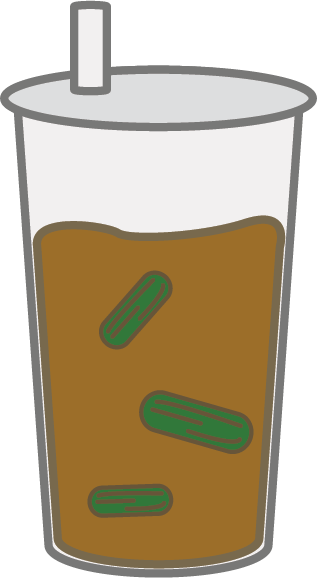

飯糰 RICE BALL
Unlike the traditional Japanese riceball, the Taiwanese version is often made out of sticky rice with fillings such as egg, pickeled cabbage, you tiao and scallions. It is usually eaten as a to-go breakfast since it can be hand held and eaten while walking to work. Surprisingly, this is also a pretty big rice ball, since it has so many ingredients filled in it!